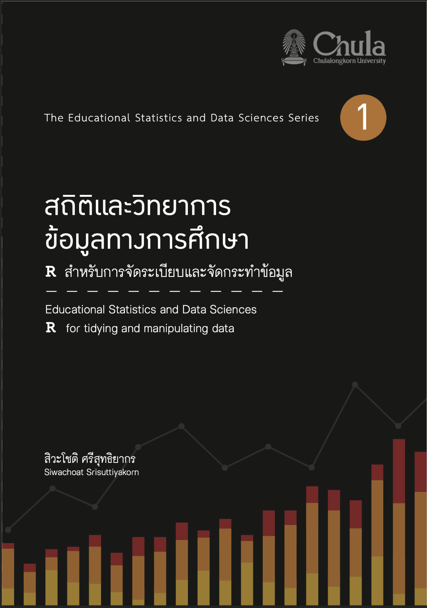

gender<-c("Male","Female","Male","Male",
"Female","Male","Male","Female")
age<-c(10,10,11,2,9,4,10,14)
weight<-c(59,35,75,20,63,23,47,59)
height<-c(142,135,150,95,141,108,142,155)
data<-data.frame(gender, age, weight, height)R for Data Analysis in Education
คำนำ

หนังสือเล่มนี้ปรับปรุงจากหนังสือสถิติและวิทยาการข้อมูลทางการศึกษา : R สำหรับการจัดระเบียบและจัดกระทำข้อมูล เนื้อหาหลักเป็นการปูพื้นฐานให้กับผู้ที่สนใจให้มีความรู้และทักษะที่จำเป็นสำหรับการทำงานด้านวิทยาการข้อมูล และการวิจัยทางการศึกษา โดยมีการปรับปรุงเนื้อหาและชุดคำสั่งในหนังสือเล่มเดิมให้มีความทันสมัย และเพิ่มเนื้อหาในส่วนของสถิติวิเคราะห์และการเรียนรู้ของเครื่องที่เกี่ยวข้องทำให้หนังสือมีความสมบูรณ์มากยิ่งขึ้น
ภาพรวมของหนังสือ
เนื้อหาในหนังสือจำแนกออกเป็น 5 ส่วน ดังนี้
ส่วนแรก แนะนำภาษา R โดยเริ่มตั้งแต่การติดตั้งโปรแกรม แนะนำ IDE ที่เหมาะสำหรับการใช้ภาษา R และความรู้พื้นฐานที่จำเป็นสำหรับการใช้ภาษา R สำหรับงานด้านสถิติและวิทยาการข้อมูลทางการศึกษา เนื้อหาส่วนนี้เหมาะสำหรับผู้ที่ไม่เคยใช้ภาษา R มาก่อน เนื้อหาส่วนนี้จะอยู่ในบทที่ 1 และ 2 ของหนังสือ ผู้ที่มีความรู้พื้นฐานหรอประสบการณ์กับภาษา R มาแล้วสามารถข้ามเนื้อหาในส่วนนี้ได้
ส่วนที่สอง การเตรียมข้อมูล เกี่ยวข้องกับการแนะนำแหล่งข้อมูลที่ผู้อ่านสามารถเข้าไปศึกษาและดาวน์โหลดมาฝึกปฏิบัติ ประเภทของชุดข้อมูล การนำข้อมูลเข้าสู่ R การสำรวจข้อมูลเบื้องต้น การจัดระเบียบข้อมูลและจัดกระทำข้อมูล เพื่อให้ได้ตารางข้อมูลรวมทั้งข้อมูลที่พร้อมและสอดคล้องกับความต้องการของการวิเคราะห์ เนื้อหาในส่วนนี้อยู่ในบทที่ 3 และ 4 ของหนังสือ
ส่วนที่สาม การสร้างทัศนภาพข้อมูล (data visualization) และการวิเคราะห์ข้อมูลเชิงสำรวจ (exploratory data analysis: EDA) เนื้อหาส่วนนี้จะกล่าวถึงหลักการเลือกใช้ ออกแบบและสร้างทัศนภาพข้อมูลด้วยภาษา R โดยใช้
{ggplot2}ที่เป็น library หลักตัวหนึ่งที่มี่ประสิทธิภาพสูงสำหรับสร้างทัศนภาพข้อมูล เนื้อหาเน้นการสร้างและการใช้ทัศนภาพข้อมูลที่เหมาะสำหรับการวิเคราะห์ข้อมูลเชิงสำรวจ ร่วมกับการใช้สถิติพื้นฐานเพื่อทำความเข้าใจสภาพของตัวแปร เปรียบเทียบความแตกต่างของข้อมูล การสำรวจความสัมพันธ์ระหว่างตัวแปร การวิเคราะห์เพื่อจัดกลุ่ม (clustering) การลดทอนมิติของข้อมูล (dimension reduction) นอกจากนี้จะกล่าวถึงวิธีการที่สามารถใช้เพื่อตรวจสอบความผิดปกติในข้อมูลที่จะเป็นปัญหาหรือเป็นปัจจัยที่ลดประสิทธิภาพหรือความถูกต้องในการวิเคราะห์ข้อมูล ได้แก่ ปัญหาค่าผิดปกติ และข้อมูลสูญหาย เนื้อหาในส่วนนี้จะอยู่ในบทที่ 5 - 7 และการวิเคราะห์ที่เกี่ยวข้องในส่วนนี้อาจเรียกว่าอยู่ในกลุ่ม การวิเคราะห์ข้อมูลเชิงบรรยาย (descriptive analytics)ส่วนที่สี่ การวิเคราะห์เชิงวินิจฉัย (diagnostic analytics) การวิเคราะห์ส่วนนี้มีวัตถุประสงค์เพื่อหาคำอธิบายสภาพที่พบในข้อมูลที่เป็นประเด็นที่ผู้วิเคราะห์หรือผู้วิจัยให้ความสนใจ เป็นกลุ่มของเทคนิคทางสถิติและวิทยาการข้อมูลที่สามารถนำไปใช้เพื่อสร้างสารสนเทศเชิงลึกและนำไปใช้ประโยชน์ทั้งในเชิงวิชาการ และเชิงปฏิบัติ เช่น การวิเคราะห์เพื่อเปรียบเทียบค่าเฉลี่ย การวิเคราะห์สหสัมพันธ์ การวิเคราะห์การถดถอย และการวิเคราะห์ต้นไม้ตัดสินใจ
ส่วนที่ห้า การวิเคราะห์เชิงทำนาย (predictive analytics) จะกล่าวถึงการสร้างโมเดลทำนายจากอัลกอริทึมการเรียนรู้ของเครื่องในกลุ่ม supervised learning ที่สามารถใช้เพื่อสร้างโมเดลทำนายที่สามารถสร้างสารสนเทศเชิงลึกที่เป็นประโยชน์โดยเฉพาะการวางแผน และการตัดสินใจในการดำเนินงานโดยเฉพาะด้านการศึกษา เนื้อหาในส่วนนี้จะกล่าวถึงมโนทัศน์เบื่้องต้นในการสร้างโมเดลทำนาย และการสร้างโมเดลทำนายด้วย
{tidymodels}ที่ประกอบด้วย การเตรียมข้อมูลสำหรับการสร้าง การปรับแต่ง และการตรวจสอบประสิทธิภาพของโมเดลทำนาย
ความรู้เบื้องต้นที่จำเป็นสำหรับผู้อ่าน
ผู้อ่านไม่จำเป็นต้องมีความรู้พื้นฐานเกี่ยวกับโปรแกรม R มาก่อน แต่ควรมีพื้นฐานความรู้ เกี่ยวกับสถิติพื้นฐานหรือเคยเรียนรายวิชาสถิติพื้นฐานในระดับปริญญาบัณฑิตมาอย่างน้อย 1 รายวิชา นอกจากนี้การมีพื้นฐานทางคณิตศาสตร์ในระดับมัธยมศึกษาตอนปลายจะช่วยให้สามารถ ทำความเข้าใจเนื้อหาบางส่วนของหนังสือเล่มนี้ได้ดีมากยิ่งขึ้น
ตัวอย่างคำสั่งและชุดข้อมูลที่ใช้เป็นตัวอย่างในหนังสือ
ภายในหนังสือมีการแสดงตัวอย่างคำสั่งที่ใช้สำหรับดำเนินการต่าง ๆ ในโปรแกรม R โดย ตัวอย่างคำสั่งที่ใช้ในหนังสือเล่มอีกอาจจำแนกเป็น 2 ประเภท ได้แก่ คำสั่งที่ไม่มีการแสดงผล และ คำสั่งที่มีการแสดงผล คำสั่งที่ไม่ได้มีการแสดงผลลัพธ์จะแสดงในลักษณะดังตัวอย่างต่อไปนี้
ส่วนคำสั่งที่มีการนำเสนอผลลัพธ์ที่ได้จากการประมวลผล จะมีการแสดงผลลัพธ์ต่อจากการเรียก คำสั่งดังกล่าว โดยที่ส่วนที่เป็นผลลัพธ์จะขึ้นต่อท้ายจากคำสั่ง เช่น การเรียกดูชุดข้อมูล data จากคำสั่งด้านบน
data gender age weight height
1 Male 10 59 142
2 Female 10 35 135
3 Male 11 75 150
4 Male 2 20 95
5 Female 9 63 141
6 Male 4 23 108
7 Male 10 47 142
8 Female 14 59 155หรือการหาผลลัพธ์จากการคำนวณทางคณิตศาสตร์ เช่น
log(x=10, base=exp(1))[1] 2.3025852^5[1] 32ไฟล์ข้อมูลทั้งหมดที่ใช้เป็นตัวอย่างในหนังสือสามารถดาวน์โหลดได้จาก …